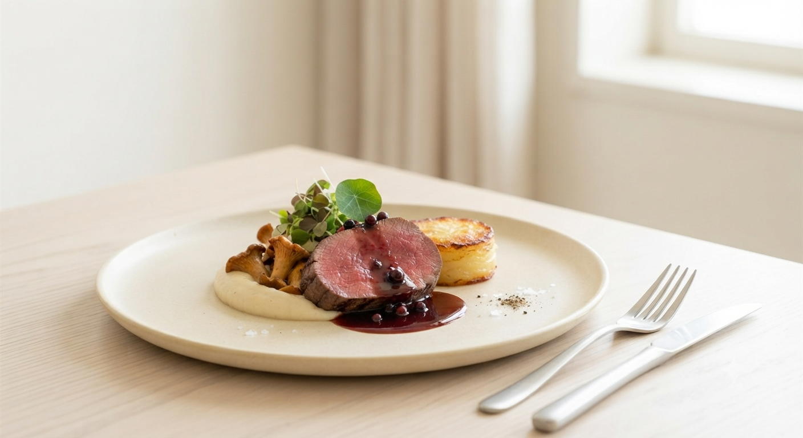
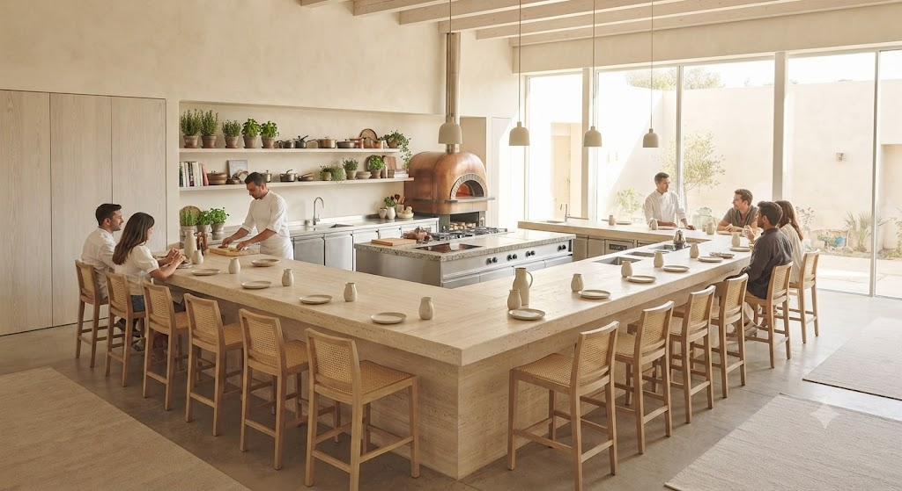
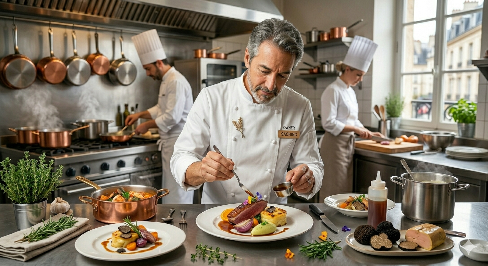
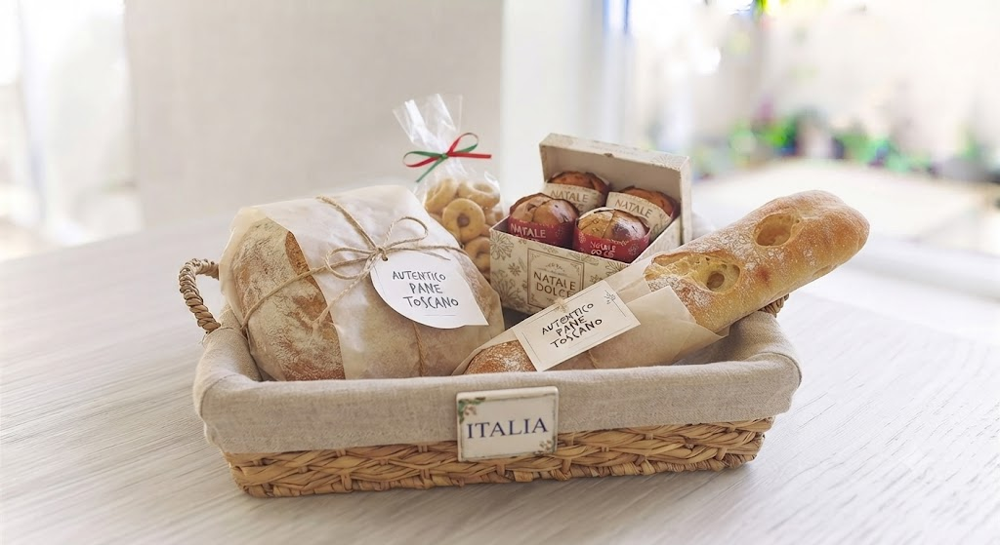

EST. 2014 SAPPORO
北イタリアの郷土料理を、北海道の旬で再構築する。
ライブ感溢れるカウンターで、五感を揺さぶる体験を。
公式LINE限定で、看板メニューの「自家製パン」引換券を進呈中。
開放的なオープンキッチンを囲む16席のカウンター。
食材が弾ける音、シェフの繊細な指先、立ち上がる香り。
ここは単なるレストランではなく、一皿の料理が完成するまでの物語を愉しむ場所。


Director Shizuru Tamazaki
初代・新田裕也が北海道に根付かせた「北イタリア郷土料理の再構築」。その意志を弱冠27歳で引き継いだ料理長・玉崎静流。
先代から学んだ「食材への誠実さ」を軸に、自身の若き感性が描く繊細な盛り付け、意表を突く組み合わせ。テアトロ ディ マッサは今、さらなる進化を遂げています。
「劇場の幕を、何度でも新しく。」
料理長 玉崎 静流
北海道が誇る名産玉葱「札幌黄」の甘みを凝縮。幾層にも重なる食感のハーモニー。
毎朝シェフが打つパスタ。ヤリイカの繊細な甘みと、旬のターサイが絡み合う。
驚くほど柔らかく仕上げられた鴨肉。牛蒡の力強い大地の香りが、一皿を完成させる。
「カウンターからキッチンが見えるのもワクワクします。ワインも好みを伝えて選んでいただきました。季節を変えてまた伺いたいお店です。」
— Review from 2024.01.05
お客様の「あったらいいな」に応える、新しいテアトロの挑戦
店名「テアトロ(劇場)」が意味するように、主役はお客様ご自身です。
お客様から丁寧にお伺いした思い出やストーリーをもとに、シェフが料理として表現・演出する完全パーソナライズコースの準備を進めております。
既存の看板コース「未知」を、大切な記念日向けに再定義。事前ヒアリングでお聞きした出会いのきっかけ、思い出の場所、大切にしている言葉などをモチーフに、シェフ玉崎が一夜限りのシナリオ(一皿)を創造します。
ディナーの贅沢な物語演出を、昼の光の中でも愉しんでいただけるランチ特別コースを開設予定。日常のちょっとしたお祝いや感謝を伝えるランチ会に、物語と季節を織り交ぜた特別なメニューをご用意いたします。
※ 各新企画の最新情報および先行予約のご案内は、公式LINEにて順次配信予定です。

コースの名脇役として、多くのお客様に愛していただく自家製パン。北海道産小麦の力強い香りと、ソースを逃さないしっとりとした質感。
今、公式LINEにご登録いただいた方へ、ご来店時に「お土産用パン」をお渡しする特別チケットを配布しております。
百名店に選出された、札幌が誇る美食の劇場へ。
特別な一夜の予約は、こちらから。
〒060-0063 札幌市中央区南3条西8丁目7 大泉ビル 2F
地下鉄「すすきの駅」より徒歩8分
TEL: 011-252-7953
※ 大泉ビルの2階へお上がりください。